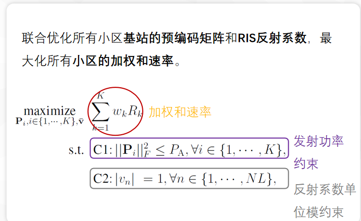
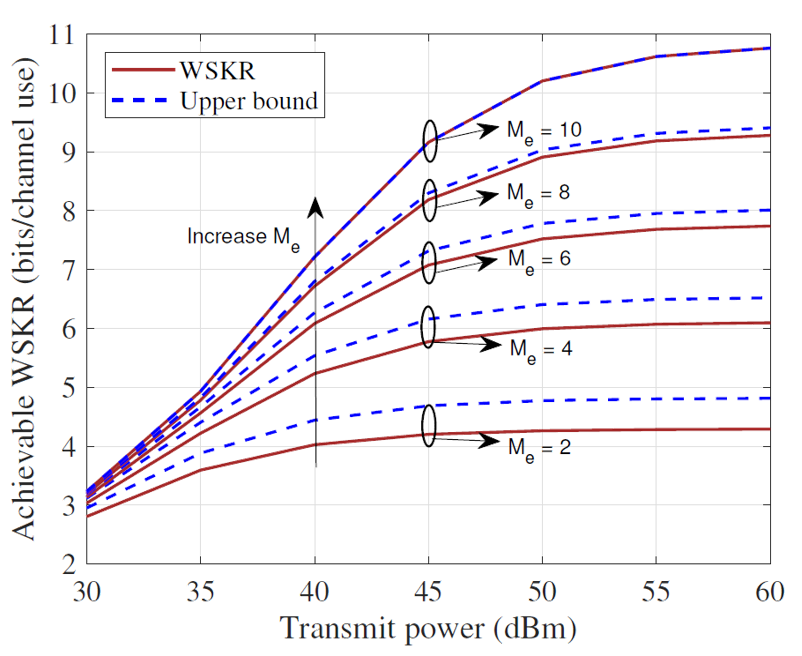

优秀论文
L. Hu, C. Sun, G. Li, A. Hu, and D.W.K.Ng, “Reconfigurable Intelligent Surface-aided Secret Key Generation in Multi-Cell Systems”, submitted to IEEE Trans. on Comm., 2023. (Major revision) (Q1, IF=8.3)
研究进展
建立优化问题，设计基于基站发射波束成形和RIS反射波束成形的信道探测方法；
推导速率上界，建立上界最大化问题，使用交替优化（AO）算法求解问题P1
1.固定v时，使用基于KKT的拉格朗日乘子法求解变量P_1,P_2,⋯,P_K；
2.固定P_1,P_2,⋯,P_K时，使用投影梯度下降法求解变量v ；
仿真结果与分析
WSKR随着发射功率增加而提高，但是在高发射功率区域，WSKR呈现递减增长（只增加基站发射功率，用户功率固定）；
当基站端口数等于天线数时，推导的上界和密钥速率相等，验证了所推导的上界的紧密性。